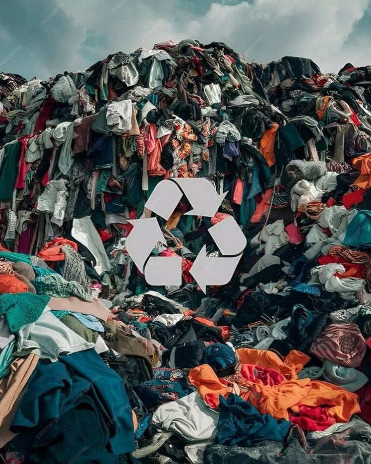

Paylaşımlar ve Bilgilendirici İçerikler
Sürdürülebilirlik hakkında bilgilendirici yazılar, görseller ve içerikler burada yer alacak.
Sürdürülebilirlik Sembolleri ve Anlamları
Sürdürülebilir ürünlerin üzerindeki semboller aslında ne anlama geliyor? Geri dönüşümden FSC sertifikasına kadar bu yazıda tüm detaylarıyla öğrenin.

Sürdürülebilir Moda
Moda dünyasında çevreye duyarlı üretim, etik iş gücü ve bilinçli tüketim nasıl olur? Sürdürülebilir modanın temel prensiplerine göz atın.